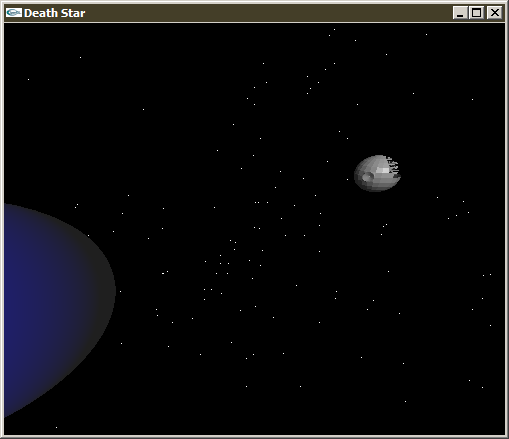

For those interested, here is my final graphics project for CS410 (Fall 07). It's an interactive animation of the death star blowing up a planet.
Windows: download, unzip, run
Linux: download, untar, make, ./main
Mac: Download the linux version, replace all of the #include <GL/glut.h> with #include <GLUT/glut.h>, do "LIBS = -framework OpenGL -framework GLUT -framework Foundation" in the makefile, make, ./main
Here's the writeup I had to submit with the program.
The source code is available here.
Controls:
- e: Move forward
- d: Move backward
- s: Move left (strafe)
- f: Move right
- a: Move up
- z: Move down
- Left mouse click: Toggle mouse look
- Spacebar: Fire the Death Star's main weapon
- r: Begin recording 180 frames of PPM at 30 fps (disabled in windows version)
- The mouse Y axis is reversed (if you move the mouse towards you, you look up)
- To view the animation again, you must restart the program (there is no reset key)
The star destroyer is directly above the camera. Some of its surface normals are set incorrectly. Also, both models are missing some faces, because they were non-convex.